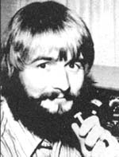

Copthorne Macdonald is the inventor of slow-scan television . . . a method of amateur radio transmission that allows ham operators to both hear and see each other during shortwave broadcasts.
A couple of years ago-when Jim Stamper (WA4HUB) and I had a chat about hams and ham equipmentJim compared the typical amateur radio operator to a man who fishes for sport.
"The sportsman's interest," Jim said, "is in catching fish at random ... with emphasis on each one's size, the desirability of the species caught, and the total number hauled in. And just as the avid fisherman wants his tackle box outfitted to handle any possible situation he may run into, the typical ham wants equipment with five-band capability, continuous tuning of each band from end to end, excellent frequency calibration, and other features which give operating flexibility, but which-at the same time-run into bundles of money."
I agreed, and Jim and I were soon discussing ways that some of us could get on the air at far less cost. We were particularly interested in cutting the expenses of those of us who use ham radio primarily as a tool for sharing with distant friends our knowledge of (and interest in) ecology, energy, the future, and other "new directions". It was soon clear to Stamper and me that the practice of restricting our operations to a few spot frequencies could-potentially-reduce equipment costs significantly.
Then again, such discipline and planning-as laudable as it may be-will never solve the more basic problem faced by would-be hams: There just isn't a decent, inexpensive receiver on the market these days. And besides that, who really wants to operate in such a restricted fashion anyway? Wouldn't you actually prefer to forget the rigidity of pre-arranged schedules altogether and just "call" your particular ham friends whenever you want to?
I think that both of these needs (the requirement of beginners for a low-cost receiver, and that of the experienced ham for spontaneous call-up capability) could be met if we worked together to design and produce a lowcost, crystal-controlled receiver ... one that's tailored to our specific needs, with no extra frills.
The receiver I'm talking about would need to be sensitive and reasonably selective (though to minimize the cost of the basic unit, we might assume that users would provide additional selectivity externally via inexpensive MFJ audio filters, or something similar). A front panel crystal socket would allow one to shift easily from one NDR (New Directions Radio) frequency in the band to another, while a "rubber crystal" fine tuning control on the front panel would allow precise setting of the receiver frequency. A rig like this-particularly if designed for single-band operation-would have a very nominal total parts cost, yet its frequency stability would be as good as the most expensive ham gear available.
OK, we've just taken care of the beginner's need for a low-cost receiver ... but we've also done something else. Since we've designed the set for very low power consumption, it can be left ON all the time . . . meaning that our NDR "channel" can be monitored continuously. Now, why not build (probably in a separate little box) some circuitry which will constantly monitor what is happening on our channel and alert us when one of our friends "calls"?
If we're away, or busy-or if ionospheric conditions are poor-he will, of course, get no answer. But we have introduced the possibility of spontaneous radio contact with our friends. We've created a way out of the yoke of calendar and clock (which is something most of us are already trying to do in other areas of our lives). Moreover, we've also found, a way to take advantage of periods of good radio propagation conditions when they exist . . . which-at this low point of the sunspot cycle-is no small matter.
All right, I've had my say. Now, what are your reactions to the above? Without a doubt, we have among us all the talent necessary to make something like this happen if we consider it worthy of the effort. Perhaps-as a start-those of us who're interested can begin to share ideas on signaling schemes, put some prototypes together, and work the bugs out. Along the way, we can be tracking down sources of parts, printed circuit boards, etc. At a minimum we could then produce a set of detailed instructions for building a complete receiver, with info on where we got our parts. In addition, someone might even get turned on enough to buy a bunch of parts and sort them into "kits". And one or more of us might decide to produce pre-fabricated units in our cottage or cabin, as suggested by Paul Doerr in MOTHER NO. 38.
Let me know what you think.
Sweden is heard from! I had a very nice chat on the air with Jan Ivarsson (SM6DOQ), who is an architecture student in Göoteborg. He and a group of fellow students are flying to California early this summer to look at eco-architecture projects on the West Coast, and to share ideas with U.S. students.
"Bo" Bogardus (W6HSE) has offered to show the group some solar energy projects in the Bay area, and-in addition-I sent Jan a set of architect's sketches of the P.E.I. Ark, an experimental food production/living unit (designed to be heated by the sun and powered by the wind) which is being built here on Prince Edward Island by the New Alchemy Institute with funding from the Canadian government. (By the way, the poster-sized drawing I sent Jan is available for $1.50 from the New Alchemy Institute, P.O. Box 432, Woods Hole, Mass. 02543 . . . or it can be obtained along with their Journal No. 3 for $6.00.)
The West Coast continues to be the scene of most New Directions activity. Randy Brink (WA7BKR) reports a record seventeen check-ins on a recent
75-meter roundtable, with ten or twelve stations participating in almost every session. (Say, all you East Coast and Midwest folks, let's have your ideas for breathing life into our roundtables this coming fall. We have our "regulars", but we still don't enjoy anything like the level of activity experienced out West.)
Randy and Bo have put out five issues of their NDR Newsletter so far (see MOTHER NO. 38), and the mailing list is already up to 140 names. I see that the latest mailing labels were typed by a teletype machine . . . no doubt automatically, from a punched paper tape. Clever fellows!
Incidentally, Randy is now on the air with RTTY (teletype transmission by radio).
One West Coast Roundtable participant, Steve (WB0PLC), has spent the past few weeks as a navigator and radio operator aboard a 165-foot sailing vessel named The Explorer. The ship is attempting a trip from California through the Panama Canal to New York City in time for the Fourth of July Bicentennial celebrations. Randy and Steve have been in radio contact daily, and Randy has put the ship in touch with several newspapers, radio stations, and one TV station interested in publicizing the voyage.
SSTV, ANYONE?
With MOTHER's readership growing rapidly, and with more and more hams getting involved in slow-scan television (SSTV) these days, it's probably a good time to ask if there are enough New Directions-oriented slowscanners reading this to get some audio-visual raps going this fall. My SSTV gear is perking, and I have some interesting energy stuff on tape. (I could also put together some material on the Ark, if the demand is there.) Randy has slow-scan gear, plus I just got a letter from Craig Roberts (WB5HKO) saying that he has a monitor in operation. Anyone else interested?
Craig suggested that we exchange slow-scan tapes in addition to exchanging pictures "on the air". Come to think of it, there might also be a place in our activities for exchanging audio tapes. Thus, segments of general interest could be shared with others on the various regional Roundtables.
I'll let you know what develops.
Peace,
Cop Macdonald (VE1BFL)
99 Fitzroy St.
Charlottetown
Prince Edward Island
Canada
|
 |
|
|